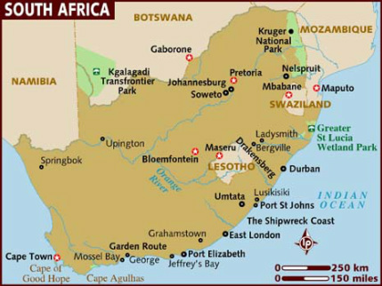
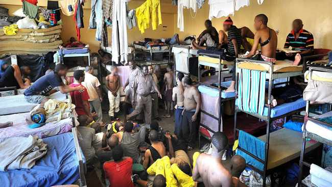

Затворска банда је организација која делује у затворском систему као самоодржавајући криминални ентитет. Обично се састоје од одбране групе затвореника где постоји отворени кодекс понашања.Бројеви су једна од таквих банди.
 Бројеви су једна од најстаријих банди света која је успела да опстане захваљујући невероватно сложеној хијерархији која обухвата три фракције: 26-ице, 27-ице и 28-ице. Двадесетшестице у затвор уноссе новац, дуван и дрогу, двадесетседмице спроводе закон, а двадесетосмице штите права закона. Сматра се да је ова банда настала почетком 19ог века. Нонголоза и Киликијум су зачетници и касније идејне вође овог удружења. Они су били мигранти радници који су тражили посао у локалном руднику. Међутим њих примећује номад По који их одвраћа од те идеје. У то време владало је робовласништво и црнци који су радили у рудницима обично нису излазили живи из њих.Наговорио их је на криминални начин живота и од тог тренутка створене су две банде, Нонголоза је у својој имао 8 чланова, а Киликијан 7. Ове две банде радиле су одвојено, Нонголоза ноћу, а Киликијан дању. Једног дана су се спојиле и радиле истовремено, али је убрзо дошло до поновног раздвајања због сексуалне оријентације неких од чланова. Таса настају 27-ице и 28-ице. Број 2 означава Нонголозу и Киликијана као вође, а 7 и 8 као број чланова. Срећу се у затвору 1907/1908, и ту су формиране 26-ице. Њихов циљ је био да успоставе свој закон унутар затвора и да се боре против расне неједнакости и сегрегације која је тада била заступљена у свету.
 Полсмор се налази у Кејптауну у Јужној Африци (прилог бр.1), и опште је познат као затвор са максималном сигурношћу. Иако је затвор био дизајниран с капацитетом од 4336 затвореника, тренутна популација затвореника премашује 7000. Ово је најнасилнији затвор у Јужној Африци и има највећи број затворских банди. У нјему Банда Бројева напредује и има највећу популацију. Већина затвореника је из депресивних заједница у којима је присутна незапосленост, недостатак образованих, бескућинство и гангстеризам. Затвореници проводе време у својим скученим ћелијама и имају један сат дневно за вежбе у затвореном дворишту. Полсмор (прилог бр.2) има мало ресурса за програме затвореника.